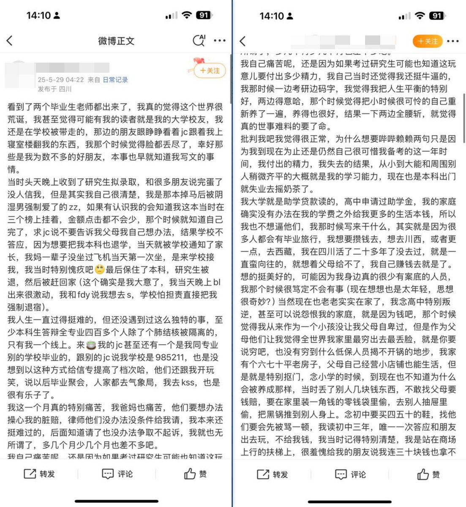
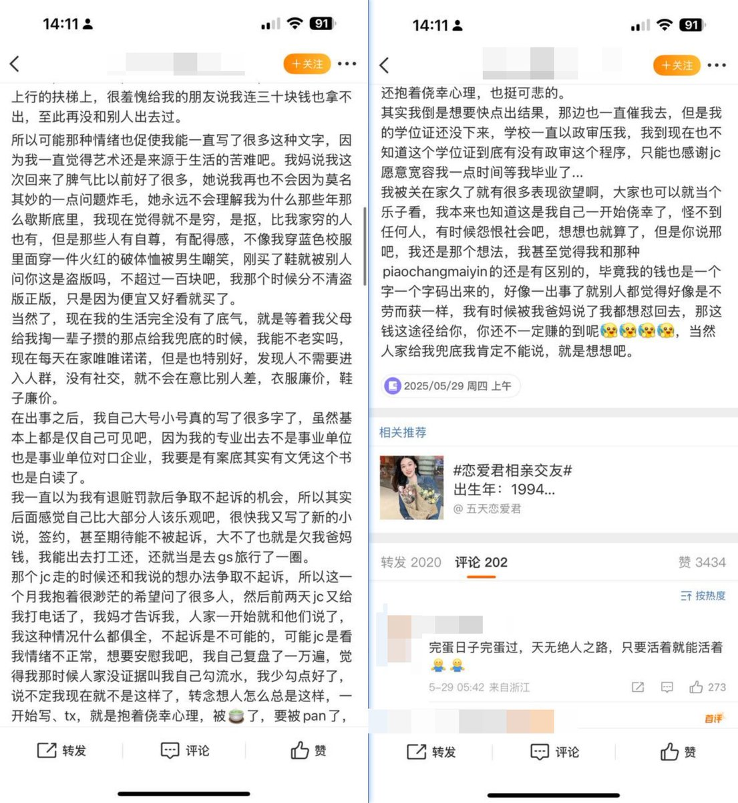
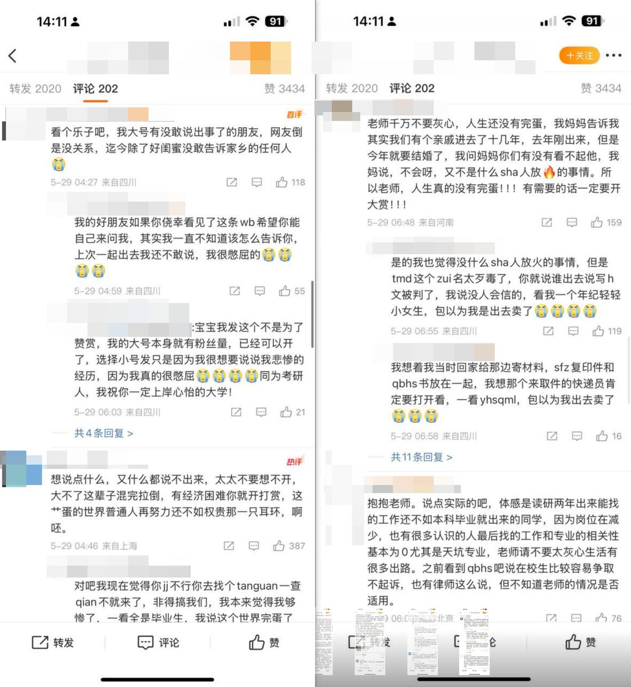

之前看过一个视频讨论国内为什么没有分级制度，大抵从两面展开，
一说负影响，说国外分级制度是逃避责任而非真的好东西
二说没必要，质疑是否真的禁绝，反问“真的找不到资源了吗”
就二而言，确实没有禁绝。多以坐视不管，但也不是不可以管，，，
这就看业绩了
兔死狐悲

一说负影响，说国外分级制度是逃避责任而非真的好东西
二说没必要，质疑是否真的禁绝，反问“真的找不到资源了吗”
就二而言，确实没有禁绝。多以坐视不管，但也不是不可以管，，，
这就看业绩了
兔死狐悲



5月29日，又有一名海棠作者发长文讲述自己因在海棠写小说被抓的过程。被抓的作者是一名985大学生，据她讲她写的小说比较受欢迎，“在三个榜上挂着，点击、金额都不少”，现在被以写黄色小说的名义调查。 https://t.co/GcbsE7wdiq https://t.co/sNZdxDG0YC